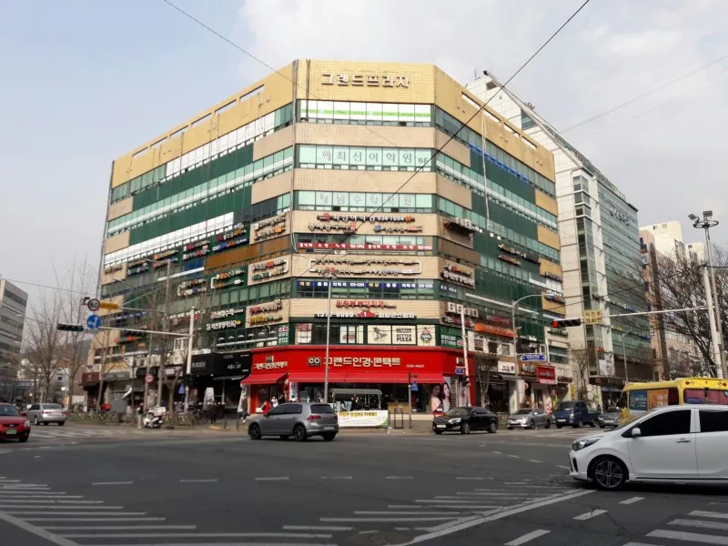

은행사거리
서울특별시 노원구 중계동에 위치한 은행사거리는 3대 학원가 중 하나로 꼽히는 곳입니다.
1990년대 초중반부터 상권이 형성되기 시작해 주로 은행이나 병원, 사무실이 들어섰지만 현재는 학원이 주를 이루고 있습니다.

<- 내가 다니던 학원
<- 내가 다
서울특별시 노원구 중계동에 위치한 은행사거리는 3대 학원가 중 하나로 꼽히는 곳입니다.
1990년대 초중반부터 상권이 형성되기 시작해 주로 은행이나 병원, 사무실이 들어섰지만 현재는 학원이 주를 이루고 있습니다.